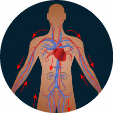

За 28 дней вы очистите артерии и восстановите нормальное
кровообращение - эффект подтвержден независимыми медицинскими исследованиями.
Привет,
меня зовут профессор Пер-Олаф Сандстрём - исследователь, специалист в области молекулярной биологии.
На этой странице я хотел бы представить вам самый важный успех в моей жизни, за который я уже
получил десяток престижных наград, в том числе премию Всемирного общества борьбы с
атеросклерозом. Я разработал метод, который позволяет каждому естественным, безопасным и экономичным
способом очистить артерии от атеросклеротических бляшек, холестерина и отложений токсинов и тем
самым восстановить в них нормальное кровообращение и снизить риск сердечного приступа на 185%
и инсульта на 168%. Я разработал метод, с помощью которого каждый может естественным
образом, безопасно и экономно очистить артерии от атеросклеротических бляшек, отложений холестерина и
токсинов, причем, в результате восстанавливается правильное кровообращение и снижается риск
сердечного приступа на 185%, а инсульта на 168%. И все это за 28 дней!
Поэтому, если вы хотите, вполне возможно:
-
избавиться от 99,7% атеросклеротических бляшек, холестерина и отложений токсинов
- за 28 дней;
-
восстановить 100% естественного кровотока артерий и насыщать кислородом каждую
клетку тела;
-
снизить риск инфаркта на 185% и инсульта на 168%;
-
раз и навсегда устранить чувство холода в ступнях и руках и забыть о боли в области
грудины;
-
избавиться от 98,9% некрасивых и болезненных варикозных вен;
-
полностью восстановить жизненные силы до состояния 20-25 лет;
-
и благодаря этому снова наслаждаться жизнью!
Неважно, сколько вам лет и как долго вы страдаете от проблем с кровообращением. Не имеет значения,
находится ли ваша проблема на ранней стадии или уже имеет далеко идущие последствия. Даже если врач
скажет вам, что нет никаких шансов на улучшение ... Знайте, что за 28 дней вы
можете восстановить 100% кровотока каждой отдельной артерии. Без скальпеля, вредных
химии и изменения образа жизни!
Вот почему мой метод является хорошей альтернативой традиционным способам борьбы с
сердечно-сосудистой недостаточностью:
-
он разработан только на натуральных активных ингредиентах – благодаря этому не
раздражает желудок и не вызывает побочных эффектов;
-
не требует соблюдения диеты или повышенной физической активности – если вы хотите
заниматься спортом или ограничить употребление определенных пищевых продуктов, вы, конечно, можете это
сделать, - но это совершенно не обязательно;
-
позволяет сэкономить тысячи евро – вместо того, чтобы тратить их на таблетки, полные
химии или неэффективных лекарств.
Я разработал естественный метод, который очищает артерии от атеросклеротических
бляшек, холестерина и токсинов и восстанавливает им 100% естественной емкости.
Благодаря ему - вы предотвратите возможность сердечного приступа и инсульта, а также защитите свои вены
от атеросклероза ... Вы забудете обо всех проблемах, которые беспокоят вас из-за плохого кровообращения.
Вы перестанете уставать во время самых простых занятий, а также избавитесь от одышки.
Наконец-то вы почувствуете свою настоящую физическую форму и вздохнете полной грудью!
Более длительные прогулки перестанут быть проблемой и станут удовольствием. Вы избавитесь от
мучительной боли в груди, забудете о постоянных судорогах и онемении стоп и рук. И все благодаря
тому, что мне удалось разработать формулу, которая растворяет 99,7% атеросклеротических
бляшек, отложений холестерина и токсинов, которые делают невозможным нормальное
функционирование кровообращения. Благодаря этому восстанавливается 100% естественного кровотока вен и
позволяет обеспечить питанием каждую клетку тела. Эффект заключается в том, что риск сердечного приступа
снижается на 185%, а инсульта на 168% и при этом мой метод защищает вены от атеросклероза. И все это
всего за 28 дней! Как я это сделал?
Я хотел освободить жену от страха перед сердечным приступом.
Согласно последним опросам, каждый пятый житель Швеции страдает недостаточностью кровообращения
в той или иной форме. Эти люди обычно не знают, что в их теле есть тикающая бомба, которая
может взорваться в любой момент. Они игнорируют усталость, боль и одышку - думают, что это нормально,
это приходит с возрастом. Однако на самом деле проблемы с кровообращением - это серьезное заболевание,
которое, если его игнорировать, может иметь трагические последствия (сердечный приступ, инсульт,
хронический атеросклероз нижних конечностей). Сердечный приступ - серьезный
предупреждающий знак. Как правило, выживает только 50% заболевших людей. К сожалению, это
случилось и с моей женой Даниэллой, 48-летней женщиной, которая не курит, не пьет и не плохо питается!
Сначала она жаловалась только на судороги в икроножных мышцах и холодные стопы. Иногда у нее начиналась
одышка. «Ничего особенного», - подумал я. Но потом стало только хуже ...
Дагни всегда была активна. Мы смеялись, что она больше всего устала ничего не делать. Нам нравилось
вместе кататься на велосипеде, бегать или просто гулять по лесу ... Со временем моя жена начала уставать
быстрее и каждые несколько шагов ей приходилось останавливаться, чтобы отдышаться. Наконец, она провела
тесты, которые показали запущенный тяжелый атеросклероз коронарных артерий. Врач прописал ей много
таблеток и посоветовал не напрягаться. Велосипеды начали пылиться в гараже, и я перестал узнавать свою
жену. Сидение на одном месте ужасно утомляло ее, она совершенно забросила себя. Извините за это, но у
меня сложилось впечатление, что она с каждым днем сдавалась все больше и больше ...
Это было опасно для ее жизни!
Но самое страшное наступило в день ее пятидесятилетия. Когда я открыл дверь, держа торт в одной руке, а
цветы в другой, я почувствовал, что что-то не так. Абсолютную тишину в доме нарушала только
собака. Я побежал на кухню, и там лежала Даниэлла, держась за сердце. Выяснилось, что у
нее случился сердечный приступ. Это был Божий перст, потому что, если бы я пришел через несколько
минут ... Я бы, наверное, не нашел свою жену живой.
Я не мог в это поверить. Всю жизнь я верил, что здоровый образ жизни, правильное питание и упражнения
защитят меня и моих близких от проблем с кровообращением. Этот сердечный приступ - это было то,во что
невозможно поверить. Как я был неправ ... Я знал, что у меня мало времени. Лишь 50% людей переживают
второй инфаркт, только 3% - третий.
Как я изобрел «противоядие от проблем с кровообращением»?
Пришлось помочь жене избавиться от атеросклероза и таким образом уберечь ее от неминуемой
смерти. Я хотел, чтобы она перестала жить в постоянном страхе и, наконец, смогла вернуться к
прежнему состоянию. Тогда я подумал про себя: «Ты исследователь! У тебя под рукой биология и химия. Ты
уже разработал множество средств от различных недугов. Придумай что-нибудь от проблем с
кровообращением!» А потом я начал искать решение проблемы...
В течение года я проводил интенсивные лабораторные исследования. Я тестировал на жене разные смеси
активных ингредиентов. Подчеркну, что все они были на 100% натуральными и безопасными для организма.
Научные знания и немного удачи дали возможность быстро продвинуться - я разработал уникальную
формулу сердечно-сосудистой системы. Я сразу сообщил об этом в лечебные учреждения. Его
эффективность на 98% подтверждена крупнейшими исследовательскими центрами Европы и США! Уже во время
тестов моя формула естественным образом избавила сотни добровольцев от проблем с кровообращением.
Моя жена уже после первой недели применения этой формулы перестала испытывать постоянную усталость и
избавилась от судорог в голеностопе. Она была рада, что ей больше не пришлось надевать в постели
три пары теплых носков, потому что ноги у нее больше не мерзли. И это было только начало. На следующей
неделе она чувствовала все больше и больше энергии и не могла больше лежать. Однажды, когда я не смог
найти ее дома, я испугался. Проверил гараж- велосипеда там не оказалось! Вернувшись из своего
“дальнего путешествия”, она сказала, счастливая: «Пер-Улоф, я чувствую себя родившейся заново. Как будто
эти трудности с атеросклерозом были кошмаром. Ты изобрел противоядие от проблем с
кровообращением. Подумай, скольким людям оно может помочь! Большое тебе спасибо. "

Дагни избавилась от атеросклероза, вернув тем самым энергию и интерес к жизни.
Благодаря моей сердечно-сосудистой формуле вы можете не только полностью избавиться от
проблем с кровообращением, но и полностью предотвратить их повторение в будущем.
Позвольте мне вкратце объяснить, откуда берутся проблемы с циркуляцией. Этот процесс очень сложен, но я
постараюсь объяснить его языком, понятным вам.
Артерии похожи на каналы, благодаря которым кровь доставляет важные питательные вещества ко всем
клеткам вашего тела.
Когда эти каналы закупорены, «части тела» отрезаны от поступления энергии и
питательных веществ и буквально умирают.
Это происходит, когда из-за различных факторов вены закупориваются или повреждаются. Как это
происходит? Даже небольшое повреждение на стенке вены может превратиться в сгусток крови - то
есть атеросклеротическую бляшку. Со временем бляшек становится больше, и в
картину добавляется холестерин. Это своего рода клей, который пытается излечить воспаление в нашем теле
и всю микроязву. Но вместо этого он еще больше забивает вены. В результате кровь течет все слабее и
перестает снабжать все органы жизненно важным кислородом и питательными веществами.
Вся система становится неустойчивой. Но хуже всего то, что атеросклеротические бляшки,
покрывающие стенки вен, похожи на бомбу замедленного действия! Если вена блокируется на 100%,
это вызывает сердечный приступ. Если большой сгусток, состоящий из холестерина, отделяется (например,
из-за стресса), он может достичь головного мозга и вызвать инсульт.
Поэтому
передо мной стояла задача создать формулу, которая будет иметь радикальный эффект: очистит вены,
регенерирует и укрепит их стенки и защитит их от дальнейшего повреждения в будущем. Я добился этого!
Я разработал сильную очищающую, регенерирующую сердечно-сосудистую формулу. Я назвал
ее Cardiofort.
Почему мою сердечно-сосудистую формулу провозгласили «чудодейственным
противоядием от проблем с кровообращением»?
ОНА ОБЛАДАЕТ ЭФФЕКТИВНОСТЬЮ БОЛЕЕ 98% ПРИ ОЧИСТКЕ И
РЕГЕНЕРИРОВАНИИ СОСУДОВ
Забитые, поврежденные артерии, препятствующие нормальному кровообращению
Очищенные и регенерированные артерии - правильное кровообращение по всему телу
До сих пор это казалось чудом. Но это факт, который подтверждается случаем моей жены и еще 14000
человек, которые уже устранили проблемы с кровообращением благодаря моему методу. Более
того, эффективность этой формулы без всяких сомнений доказана Британским исследовательским
центром в Ливерпуле. Это всемирное открытие, признанное выдающимися кардиологами.
ЭТО 100% БЕЗОПАСНО И ПРОСТО В ИСПОЛЬЗОВАНИИ

Натуральные ингредиенты творят чудеса - человечество накопило достаточно научных знаний, чтобы
создать идеальный состав! Это девиз, которого я придерживался при создании формулы, очищающей артерии.
В составе лекарства только натуральные, безопасные и сверхэффективные вещества. Я
изготовил их в виде удобных для приема капель, чтобы каждый мог без проблем проводить лечение дома
самостоятельно. Достаточно принимать по 60 капель два раза в день, чтобы раз и навсегда избавиться от
проблем с кровообращением через 28 дней. Без побочных эффектов и без разрушения пищеварительной
системы.
19
Personer har köpt idag
Вы восстановите форму, забудете о боли и будете гордиться своей энергией и силой!
Как вы могли упустить шанс избавиться от проблем с кровообращением?
Вы можете по-прежнему страдать от судорог, варикозного расширения вен и ощущения холода в ногах и
руках. Вы можете и дальше терпеть одышку, постоянное чувство усталости и боли в груди и игнорировать
связанный с этим риск ... Но почему, когда я гарантирую вам естественный, простой и экономичный
способ раз и навсегда ликвидировать проблемы с кровообращением, вы не стараетесь вылечиться?
Всего лишь 28 дней лечения хватит, чтобы вы стали одним из 14 000 довольных пользователей
Cardiofort, которые уже забыли об усталости, одышке и варикозном расширении вен и вернули
100% прежнего состояния.
Вы ничем не рискуете!
Используя Cardiofort вы очистите артерии в течение 28 дней. К тому же вы ничем не рискуете! В
качестве успешного решения проблем мирового уровня, моя формула получила престижную гарантию тройного
удовлетворения: оригинальность, качество и полное излечение.
Гарантия тройного удовлетворения
-
Гарантия оригинальности – в формуле, помогающей сердечно-сосудистому
кровообращению. Cardiofort заключает в себе формулу на основе сильнейших веществ,
очищающих вены и укрепляющих их стенки. Его эффективность в устранении атеросклеротических бляшек
подтверждена клиническими испытаниями. Это единственная настолько инновационная формула. Таким
образом, вы можете быть уверены, что получите оригинальный продукт, доступный только на этой
странице.
-
Гарантия качества – Благодаря передовому процессу производства, , Cardiofort соответствует
высочайшим стандартам качества. В зависимости от вашего здоровья и самочувствия концентрация
активных веществ подобрана так, чтобы лечение было полностью безопасным. Все сделано для того,
чтобы его эффект на 100% оправдали ваши ожидания.
-
Гарантия эффективности – многочисленные лабораторные и потребительские тесты
подтверждают высочайшую эффективность Cardiofort. Основываясь
на этих результатах, лекарство получило признание специалистов по всему миру, которые
рекомендуют его всем, кто обращается к ним за помощью. Они уверены, что за 28 дней вы очистите
вены и в дальнейшем заблокируете появление атеросклеротических бляшек.
Очистите артерии за 28 дней с помощью Cardiofort естественным, простым и
экономичным способом.
Крупные фармацевтические компании из США и Японии буквально борются за патент на мою кардио-циркулярную
формулу. Когда я продам патент, лечение будет доступно во всем мире, но будет стоить очень дорого.
Прежде чем это произойдет, я решил сделать его доступным в Европе для участия в дисконтном
клубе - скидка 50% делают его дешевле. Все это для того, чтобы помочь восстановить
нормальное кровообращение как можно большему количеству людей не только в моей стране но и в во всей
Европе.
Поэтому я призываю вас воспользоваться этой возможностью! Сделать заказ в дисконт-клубе очень просто.
Вам не нужно отправлять деньги через Интернет или платить картой, чтобы получить Cardiofort.
Достаточно заполнить форму за 2 минуты и уже через пару дней вы получите посылку, которую
удобно оплатить курьеру.
Спасибо, что нашли время прочитать мое сообщение. Я желаю вам большого счастья в вашей новой жизни,
свободной от проблем с кровообращением, а также от страха перед сердечным приступом, инсультом и
атеросклерозом. Через 28 дней вы забудете, что когда-либо беспокоились об этой проблеме!